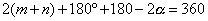
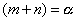
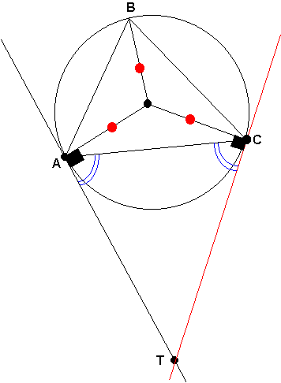
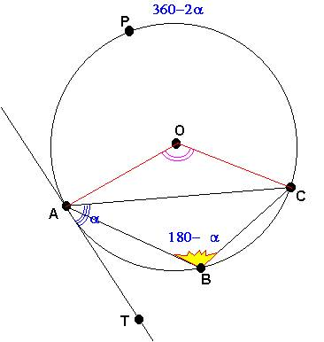
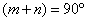
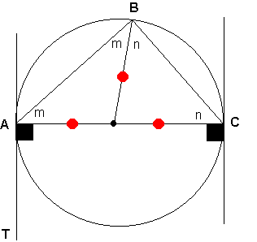

Para el aula
Problema 278
Dado el triángulo ABC, construyamos su circunferencia circunscrita.
Tracemos la recta tangente AT a la circunferencia por el punto A.
Demostrar que ÐABC = ÐCAT, o ÐABC + ÐCAT=180.
Solución: I caso
Por propiedad sabemos que TA=TC entonces triángulo ATC (isósceles)
Sea ÐA=ÐC=a entonces ÐT=180-2a
Sea O el centro de la circunferencia. Sean: ÐABO=ÐBAO=m,
y .ÐCBO=ÐBCO=n
Ahora en el cuadrilátero ABCT se cumple que:  

Caso II
En segundo caso observamos que cuando el punto B se encuentra bajo el arco AC los ángulos ÐABC+ÐCAT=180º

Y como un caso especial cuando la cuerda AC se convierte en diámetro entonces los ángulos ÐABC=ÐCAT=90
Caso II de donde se demuestra que: 
